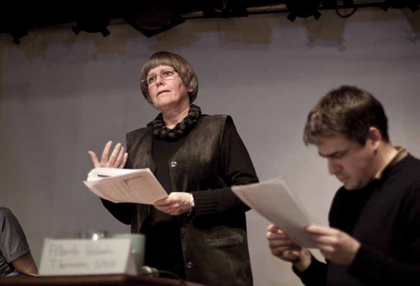
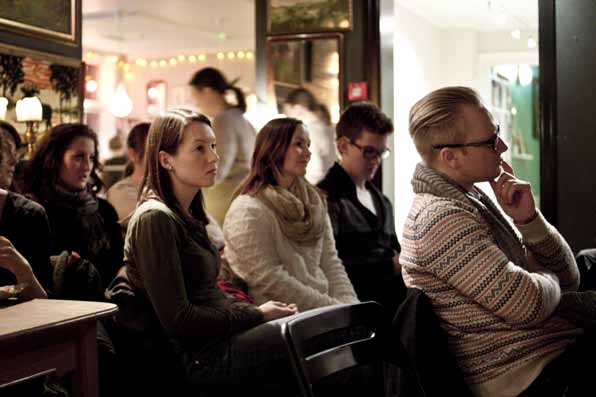

Forskning er ikke lenger noe som gjemmes bak dyre abonnementsordninger. Med Open Access blir den mer tilgjengelig for alle.
TEKST: Synne Lerhol
Kyrre Sandve Ryeng
FOTO: Anette Morvik Robberstad

Når forskning publiseres i Open Access
(OA), blir den tilgjengelig på internett,
hvor man enten kan få full eller delvis
tilgang uten å betale.
Leder Øyvind Berdal ved Norsk
studentorganisasjon (NSO) mener det
er prinsipielt viktig med Open Access.
– Forskning betalt av det offentlige
bør være tilgjengelig for allmennheten.
I dag genererer mange forlag store
summer på forskning som er betalt
av det offentlige, sier han.
Viktig med delekultur
Berdal hevder at åpenhet i akademia er
helt sentralt for god forskningsbasert
utdanning, og at det derfor er viktig
med OA for å bedre studiekvaliteten
for studentene.
– Det er viktig å skape en delekultur
som bidrar til å bedre kvaliteten til
både forskning og utdanning. Med
mer åpenhet kan studentene få bedre
tilgang til nyere forskning, noe som
kan bidra til å stimulere til ny kunnskap
og innovasjon, sier han.
Berdal er svært positiv til at stadig
flere tidsskrifter med god kvalitet
publiserer i OA.
– Det blir stadig flere som ser
fordelen av OA. Det må bygges en
kultur, vi må endre holdningene
innen akademia, og det er viktig at
alle krefter trekker i samme retning.
EU, Storbritannia og Danmark er
aktører som har kommet langt innen
OA, sier han.
Må betale løsepenger for forskning Randi Tyse Eriksen ved Universitetsbiblioteket ved NTNU forteller at de store multinasjonale forlagene tar seg godt betalt, også for Open Access. Dette forutsetter at forskerne eller deres institusjoner har råd til å betale disse avgiftene. – Institusjonene må betale «løsepenger » for at artiklene deres egne forskere har produsert, skal være åpent tilgjengelige, sier hun. Eriksen forteller at forskere i flere land har merket effekten av dårlige tider i finansmarkedet, og dermed mindre tilskudd til universitetsbibliotekene. Hun mener at norske forskere som nå søker Forskningsrådet om prosjektmidler, bør budsjettere med avgifter til publisering i OA-tidsskrift. – Mer forskning har blitt tilgjengelig for alle, som følge av at flere artikler publiseres i Open Access, sier hun. Hun mener det er vanskelig å slå fast hvor stor innflytelse de ulike OA-tidsskriftene har innen akademia, fordi det er veldig nytt. – Kvaliteten er ikke nødvendigvis dårligere enn i de tradisjonelle abonnementstidsskriftene, sier hun.
Lite prestisje med OA Prorektor for forskning og utvikling Curt Rice ved Universitetet i Tromsø ser en økende støtte til OA i akademia, men legger ikke skjul på at forskere står overfor dilemma som kan vanskeliggjøre prosessen mot OA ytterligere. – I en akademisk karriere blir man stadig vurdert av sine kolleger. Forskerne må velge mellom å bli publisert i høyprestisjetidskrifter, noe som tradisjonelt ikke innebærer OA, eller om de skal publisere i OA. Dette vil kanskje ikke fremme karrieren i like stor grad, sier han. Det er likevel enkelte hendelser som har hjulpet forkjemperne for åpen forskning. – Det hjalp veldig at nobelprisvinneren i medisin, Sir John Gurdon, publiserte sin forskning i OA. Det viser at tilgjengelig forskning er av høy kvalitet, sier han.
Redde for akademisk svindel Postdoktor Henrik Karlstrøm ved NTNU sier det kan ta to år fra en artikkel er ferdigskrevet til den kommer på trykk i et tidsskrift. Han forklarer at årsaken til dette er at det er for få publiseringskanaler. Samtidig peker han på at mange useriøse aktører tjener penger på artikler, og dermed ødelegger potensialet til mange ukjente forlag. – Forskere er ofte forsiktige med å publisere i ikke-renommerte tidsskrifter, blant annet fordi de er redde for akademisk svindel, sier han. Karlstrøm har vært med på å starte et nytt OA-tidsskrift for å øke andelen artikler som er gratis på nett. – Det er rart at forskning som er offentlig finansiert, ikke er tilgjengelig for alle, sier han.
Lettere med kvalitetssikring Norges Forskningsråd, EUs forskningsgruppe og amerikanske National Institute of Health krever nå at forskningsresultater publiseres i OA. Curt Rice mener dette er en positiv utvikling. – Selv om mange forskere kan føle seg presset, er det sannsynligvis slike tiltak som må til for å endre systemet for publisering av forskning, sier han. Rice mener de tradisjonelle publikasjonssystemene har behov for endring. – De tradisjonelle systemene har ikke god nok kvalitetssikring. Tilbaketrekking av artikler på grunn av eventuelle feil har økt kraftig, særlig i mange av de tidsskriftene med høyest prestisje, sier han. Han tror mer åpenhet og tilgjengelighet vil bidra til å sikre kvaliteten på forskning. – I de tradisjonelle systemene er det ofte bare tre fagfellevurderinger. Dette er tydeligvis ikke bra nok for å fange opp feil. Med OA og publisering på nettet skapes det nye muligheter for fagfellevurdering. Det vil være et mer åpent system der man lettere kan kvalitetssikre andres forskning, sier han.